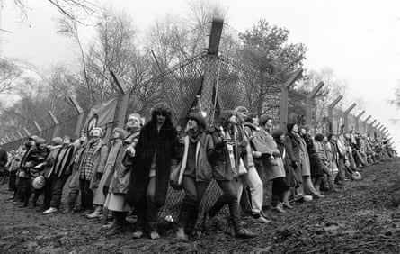

I n August 1981, 36 people, mainly women, walked from Wales to RAF Greenham Common in Berkshire to protest against the storing of US cruise missiles in the UK. They were alarmed about the imminent threat the weapons posed for themselves and for their children, they later said .
More than 40 years on, the prospect of American nuclear weapons stationed on British soil has returned with urgent focus. And for some of the women who were at the Greenham Common women’s peace camp , it is time for dissenting UK citizens to rise up again.
In the wake of the UK government’s announcement this week that it plans to significantly expand its nuclear arsenal by buying a squadron of American fighter jets capable of carrying US tactical warheads, key figures at Greenham hope a new generation of campaigners will take up the baton.
The UK government has said it plans to buy 12 Lockheed Martin F-35A fighter jets.Photograph: Benoît Tessier/Reuters
Ann Pettitt, now 78, devised the original idea for a march that led to the formation of the camp. At its height, more than 70,000 women were there and it became the biggest female-led protest since women’s suffrage . It was, as Pettitt says, “actually successful” in managing to hugely raise awareness of the presence of US nuclear warheads in the UK – the last of which left RAF Lakenheath in 2008. The camp went on after the Greenham Common missiles had gone in 1991 and the base was closed in 1992. The remaining campaigners left Greenham Common after exactly 19 years.
Pettitt said this week’s news had left her “disillusioned” but she was hopeful that a younger generation would protest. “It certainly calls for protest, because it’s so stupid,” she said. “Nuclear weapons are like the emperor’s new clothes, they can’t be used and if they are they backfire because of radiation spreads and they target civilians. We should simply not have them.”
The decision to buy 12 F-35A jets , which are capable of carrying conventional arms and also the US B61-12 gravity bomb, a variant of which has more than three times the explosive power of the Hiroshima bomb, has energised the anti-nuclear movement, said Sophie Bolt, the general secretary of the Campaign for Nuclear Disarmament.
At its height, more than 70,000 women were at Greenham Common, and it became the biggest female-led protest since women’s suffrage.Photograph: PA
The group has organised a protest on Saturday at RAF Marham in Norfolk , and Bolt said Greenham women – many of whom are in their 70s – still form the “backbone” of the resistance.
“These are women who have got a huge history and totally understand how high the stakes are,” she said. “Their determination, creativity and strategic thinking is just really incredible. They are a massive inspiration and so enriching to the campaign.”
One of those women, Angie Zelter, 74, went on to found the civil disobedience campaign Snowball and the anti-nuclear weapons group Trident Ploughshares . In 2019, aged 68, she was found guilty of a minor public order offence for protesting with Extinction Rebellion . “We had a saying, ‘carry Greenham home’, and from the moment I was there that’s what I’ve done,” she said.
But Zelter said it was also time for a new generation of Greenham women. “I think we need a new women’s movement, but I think actually we need everybody to rise up, quite frankly. All we can do as elders is support younger activists and give advice, solidarity and support.”
Angie Zelter: ‘It is a moment of hope that people will realise that they’ve got to come together and protest loud and clearly.’Photograph: Francesca Jones/The Observer
There was no time for squabbles in despondency, she added. “I hope it is a moment of mass realisation when we come together now and say, look, enough is enough … It is a moment of hope that people will realise that they’ve got to come together and protest loud and clearly.”
Pettitt said those not ready to man the barricades could still join the struggle – by the simple act of writing a letter to MPs to protest about the “outrageous” decision to buy the jets without parliamentary debate. “The way to get it discussed in parliament is to write your MP a letter,” she said. “Parliament is still very archaic … the humble letter is part of that kind of archaic functioning that is surprisingly effective.”
Another original walker, Sue Lent, now 73 and a councillor on Cardiff council, said the general public had lost sight of the anti-nuclear movement, but she hoped that a silver lining from the news this week was that younger and older activists would start “joining the dots”.
“1981 is a long time ago,” she said. “But hopefully the spirit still lives on and can be revived.”